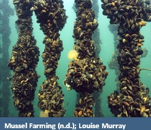
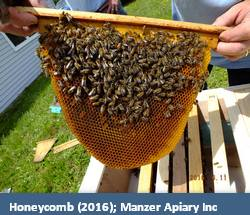

-
Wholistic Site Assesments
Wholistic site assessments are a form of surveying that looks at the physical characteristics of a site through collection of information to determine ecological, social, and economic areas of value. This information my then be used to create value added services and/or products. http://www.silvafor.org
Wholistic Site Assesments exampleEnvironmental Monitoring
Environmental monitoring is a wide ranging field encompassing the collection of data on features of interest such as air, water, soil, etc. most often this involves collecting samples at regular intervals over a set time period and analyzing these samples. http://www.smu.ca
Environmental Monitoring exampleFish Habitat Restoration

Fish habitat restoration is the process of maintaining or enhancing aquatic habitats through varied processes that range from connecting blockages between sections of streams to increasing the habitat value of individual stream sections. This often involves both data collect and physical restoration work. http://nsadoptastream.org
Fish Habitat Restoration exampleLiving Shorelines
Living shorelines are an erosion control technique that uses the strategic placement of organic materials such as dirt, hay, sticks, logs, etc. combined with vegetation planted in these materials to reduce or eliminate erosion. This method of erosion mitigation is most effective against gradual erosion processes. http://www.habitat.noaa.gov
Living Shorelines exampleNutrient Bioextraxtion
Nutrient bioextraction is the process of using cultivated seaweed and shellfish to convert nutrients from a potently harmful source of algae blooms into a useful and profitable crop. This often takes the form of placing species which take in the excess nutrients in strategic locations to harness this characteristic. http://longislandsoundstudy.net
Nutrient Bioextraxtion exampleBeehives
Beehives are the homes of bee colonies whether in the form of hollow logs or manufactured hives. These structures provide shelter to bees which are major pollinators that provide a wide range of natural services and products. http://www.friendsofthehoneybee.com
Beehives examplePerennial Food Systems
Perennial food systems are a form of edible landscape focusing on the cultivation of a number of plants that bear year after year ranging from vegetables, to fruits, to nuts, to spices. This diverse range of species are often planted in complementary fashions in which each plant benefits the other in some way. http://www.perennialsolutions.org
Perennial Food Systems exampleUrban Greening
Urban greenery is any vegetation or “green space” contained within a predominantly urban setting. These pockets of nature have been scientifically proven to provide numerous benefits from positive physiological effects for local residents, to buffering against both extremes of hot and cold, to creating local pockets of wildlife habit. https://www.asla.org
Urban Greening exampleGrey Water
Greywater is the by-product of household activities such as washing laundry, washing hands, bathing, etc (though not toilet use). Grey water may be used for a number of applications from irrigation to toilet flushing, and can be utilized using a number of designs, some simple some complex. http://greywateraction.org
Click on the images below to learn more about concepts about ecological design that creates economic opportunities
-
Salt Marsh (n.d.); Klaus Lang
-
Permaculture (2016); Randy Fredericks
-
Ecotourism (n.d.); Konstantin Mikhailov
-
Phycology (n.d.); Oleksiy Maksymenko
-
Woman's Hand Plucking Money Off of Money Tree (n.d.); John Lund
-
Forest Ecosystem Classification (2016); Randy Fredericks
-
 Solar Panel (n.d.); Larry Miller
Solar Panel (n.d.); Larry Miller -
Rain Garden at Dansko in West Grove, Pennsylvania (n.d.); Environmental Images